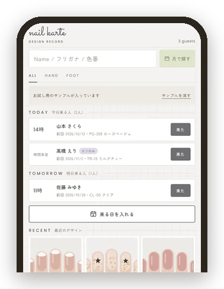
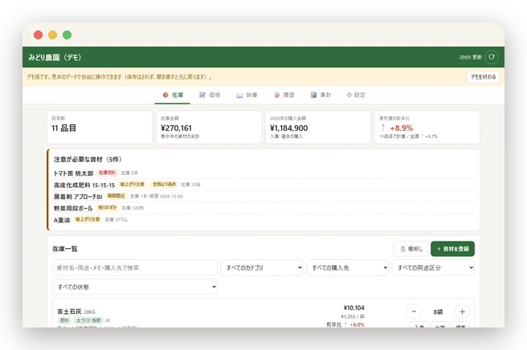
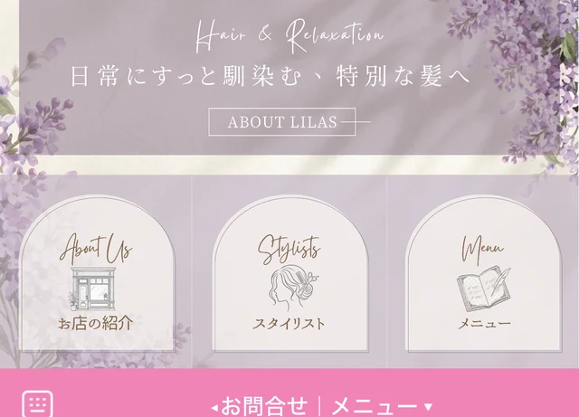

TOMORU（新井 朋美）
TOMORU（新井 朋美）
お仕事の「めんどう」を、
かんたんに使える道具に。
お店や農園、毎日のお仕事で「これ、もっと楽にならないかな」と思っていることをお聞きして、パソコンでもスマホでも使える記録帳や請求書、ホームページなどをつくっています。
いまは無料でお作りしています
実績づくりのため。いくつも追加する場合は費用をご相談します
こんなこと、ありませんか？
- 紙のノートや手帳に書いていて、あとで探すのが大変
- 同じことを毎回手で書いたり、電卓で計算したりしている
- Excelの表がごちゃごちゃして、家族や人に頼めない
- お客さんの写真やメモが、スマホのあちこちに散らばっている
- お店や商品のよさを、ネットでうまく伝えられていない
- お客さんから同じことを何度も聞かれて、そのたびに手が止まる
ひとつでも当てはまったら、それを楽にできるかもしれません。
下で、実際に作ったものと一緒にご紹介します。
1どんなことをしているの？
紙のノートや手書きの帳面、スマホの写真フォルダ、Excelなどでがんばって管理していることを、スマホひとつで、ボタンを押すだけで済む形に置きかえるお手伝いをしています。
- パソコンでも、スマホだけでも大丈夫
パソコンをお持ちでない方も、スマホだけで使えるように作ります。 - AIを使って作っています
AIを活用して作るので、試作を早くお見せでき、直したいところにもすばやく対応できます。 - 難しい言葉は使いません
「何が困っているか」をお話ししてもらえれば十分です。 - デザインにもこだわっています
使いやすさを大切にしながら、お好きな配色や、お店・お仕事のイメージに合わせた見た目にもできます。 - 使いながら直していきます
まず小さく作って、使ってみて、気になるところを直します。
2これまでに作ったもの
身近な方からのご相談で作ったものです。
どれも「困っていること」から始まりました。




農家さんから今も使ってもらっています
話すだけの困りごとメモ
困っていたこと困っていることを文章にして書き出すのが大変。
こうなりましたスマホに向かってひとこと話すだけで記録。急ぎのことは「急ぎ」の印を付けて送れます。

メロン農家さんから
買いやすい販売ページ
困っていたことネットショップの値段や送料、食べ頃が分かりにくい。
こうなりました大事な情報を図やカードで整理して、迷わず買えるページにしました。

お店向けに作った見本
代わりに答えてくれるお店のLINE
よくある困りごと「駐車場ある？」「いくら？」と同じことを何度も聞かれる。手が離せなくて、電話にもLINEにもすぐ出られない。
こうできますお客さんが画面の下のボタンを押すだけで、LINEがすぐに答えてくれます。お店が忙しいときも、夜でも大丈夫。友だちになってくれた人には、お礼のあいさつも自動で届きます。
架空のヘアサロンで作った見本です。友だちになると、スマホでそのまま試せます。
「さわって試す」は、登録なしでそのまま試せます。試しに入れた内容は、開いたスマホの中だけに残り、だれにも送られません。
使っている方の声
もう作ってくださったんですか！はやすぎてびっくり！！携帯音痴な私でも、アプリがわかりやすいです。めちゃくちゃ便利！こういうのが欲しかったんです！
思いついたときに、すぐに記録できていい！
在庫管理は、つつかれないと後回しにしすぎるから、ほんと助かる！
めっちゃわかりやすい！ありがとう。こんなのが欲しかった！
3こんなことができます
- お客さん・注文・在庫の記録帳
- 請求書・領収書をかんたんに作る
- お店や農園の紹介ページ
- 商品を紹介する販売ページ
- 写真で残す作業や施術の記録
- LINEへのお知らせや、表への自動まとめ
- お客さんの質問に、LINEが自動で返事
ここにないことでも大丈夫です。「こんなことできる？」と聞いてもらえれば、できるかどうかお答えします。
4進め方
- お話を聞きます
LINEやメールで、ふだんのお仕事の流れと困っていることを教えてください。 - 試しに作ります
まずは小さく、実際にスマホで触れるものを作ります。 - 使ってみてもらいます
使い方はいっしょに確認します。説明書も用意します。 - 直していきます
「ここが使いにくい」「これも欲しい」を聞いて仕上げます。
5よくある質問
スマホの操作に自信がないのですが…
大丈夫です。ボタンを少なく、文字を大きくして、迷わない作りにしています。使い方の説明書もお渡しし、分からないところはLINEでいつでも聞いていただけます。
何を頼めばいいか、まだはっきりしていません
それで十分です。ふだんのお仕事の話を聞きながら、どこを楽にできそうかいっしょに考えます。
費用はどれくらいかかりますか？
今は実績づくりのため、無料でお作りしています。いくつも作る場合や、あとから機能をたくさん追加する場合は、費用をご相談させてください。月々の利用料がかからない作り方もご提案できます。
どうして無料なんですか？
今は、作ったものを「実際に使ってもらえた実績」として増やしたい時期だからです。そのかわり、使ってみた感想を聞かせていただけるとうれしいです。
相談だけして、頼まなくても大丈夫ですか？
もちろん大丈夫です。お話を聞いて、作らなくても今のやり方で十分そうなときは、正直にそうお伝えします。気をつかわず、話してみてください。
作ったあとに直してもらえますか？
はい。使っていくうちに出てくる「ここを変えたい」にも対応します。
6つくっている人

TOMORU（トモル）新井 朋美
名前は「ともに」と「灯る」から。人やお店の困りごとに、小さな解決の灯りをともしたい、という思いでつけました。
ふだんは会社員として働きながら、身近な方の「困った」を道具にしています。新しいやり方を押しつけず、今のやり方のまま、手間のかかっているところだけを楽にすることを大切にしています。
7ご相談はこちらから
「ちょっと聞いてみたい」だけでも大歓迎です。
やりとりはLINEかメールで行うので、
お会いしなくても最後まで進められます。
ご都合のいい時間に送ってください。
お返事はだいたい1日以内にします。